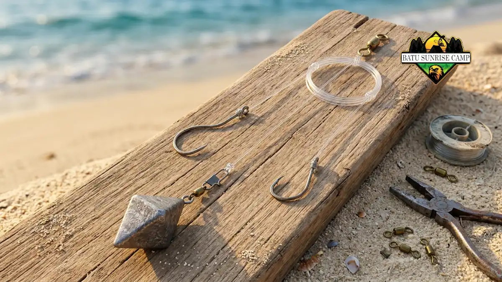

Teknik memancing di pantai saat camping meliputi memilih lokasi dan waktu, memasang rig dasar, melempar umpan melewati ombak pecah, lalu menunggu dan membaca gigitan dengan sabar.
- Amati pantai terlebih dahulu untuk menemukan palung, arus, dan tempat ikan berkumpul.
- Rig dasar dengan pemberat dan satu atau dua kail sudah cukup bagi pemula.
- Lempar umpan melewati ombak pecah dan jaga senar tetap sedikit tegang.
- Waktu pagi dan sore umumnya lebih menjanjikan, tetapi hasil dapat bervariasi.
- Kesabaran dan pelepasan ikan secara bertanggung jawab menjaga kegiatan tetap menyenangkan.
Mengapa Teknik Memancing di Pantai Berbeda dari Memancing di Tempat Lain?
Memancing dari pantai berbeda karena pemancing berdiri di bibir air, harus melempar melewati ombak, dan membaca arus serta dasar pantai tanpa bantuan perahu atau alat pencari ikan.
Di pantai, ikan sering berada di area yang tidak terlihat dari daratan, misalnya palung di balik ombak pecah.
Pemancing perlu mengamati warna air, pola ombak, dan arus untuk menebak lokasi tersebut. Teknik yang benar mengurangi kehilangan umpan dan menghemat tenaga.
Menurut American Sportfishing Association (ASA) dalam 2026 Special Report on Fishing, sekitar 19 juta pemancing di Amerika Serikat berhenti memancing dalam periode 2024 hingga 2025, tetapi 99 persen dari mereka yang memancing pada 2025 berniat memancing lagi pada 2026.
Data ini menunjukkan bahwa banyak orang mencoba memancing dan sebagian berhenti, sehingga pengalaman awal yang menyenangkan sangat berarti.
Teknik dasar yang rapi membantu pemula mendapat pengalaman positif sejak awal. Pemilihan alat yang sesuai dibahas pada panduan alat pancing untuk camping pantai.
Bagaimana Cara Memilih Lokasi Memancing di Pantai?
Pilih lokasi dengan mengamati garis ombak, palung air yang lebih gelap, tanjung kecil, muara, dan struktur seperti karang, karena ikan sering berkumpul di sekitar area tersebut.
Datanglah ke pantai saat air surut untuk melihat bentuk dasar. Palung dan celah terlihat lebih jelas ketika air rendah. Catat lokasi tersebut, lalu memancinglah di sana saat air naik.
Perhatikan juga keselamatan lokasi. Hindari karang licin dan tepi tebing yang terkena ombak. Untuk faktor keselamatan, baca panduan keselamatan memancing di pantai saat camping.
Umpan Apa yang Cocok untuk Memancing di Pantai?
Umpan yang cocok untuk memancing di pantai mencakup umpan alami seperti udang, cacing laut, dan potongan ikan, serta umpan buatan seperti jig kecil, sendok, dan umpan lunak.
Pilihan umpan bergantung pada ikan yang dituju dan kemudahan membawa.
- Umpan alami. Udang dan cacing laut umumnya menarik banyak jenis ikan. Simpan di cooler dengan es agar tetap segar.
- Potongan ikan. Cocok untuk memancing di dasar. Aromanya kuat, sehingga perlu dipisahkan dari makanan kemah.
- Umpan buatan. Lebih awet dan tidak berbau, sehingga praktis untuk camping beberapa hari. Perlu digerakkan agar menyerupai mangsa.
Umpan alami menarik lebih banyak ikan pada banyak kondisi, tetapi lebih repot. Umpan buatan lebih praktis, tetapi memerlukan latihan menggerakkan. Pemula dapat membawa keduanya.
Bagaimana Langkah Memancing dari Pantai Bagi Pemula?
Langkah memancing dari pantai adalah memasang rig, memasang umpan, melempar melewati ombak pecah, menunggu dengan senar sedikit tegang, lalu menarik joran saat gigitan terasa.
Ikuti urutan berikut agar tidak terlewat.
- Pasang senar pada reel, sambungkan leader, lalu ikat kail dan pemberat.
- Pasang umpan pada kail dengan rapat agar tidak lepas saat dilempar.
- Periksa area belakang dan samping agar lemparan aman bagi orang lain.
- Buka bail reel, ayunkan joran ke belakang, lalu lempar ke depan dan lepaskan senar pada ketinggian tepat.
- Tutup bail reel, gulung senar hingga sedikit tegang, lalu letakkan joran pada penyangga atau pegang.
- Saat ujung joran bergetar atau tertarik, angkat joran dengan gerakan tegas lalu gulung perlahan.
Latihan melempar di area kosong membantu mengurangi risiko kail menyangkut. Selalu lindungi mata dan kepala dengan topi dan kacamata.

Skema rangkaian rig dasar memancing di pantai yang kokoh menahan arus ombak serta memudahkan pemula mendeteksi getaran gigitan ikan.
Kapan Waktu yang Tepat untuk Memancing di Pantai?
Waktu yang umumnya menjanjikan untuk memancing di pantai adalah pagi dan sore hari, serta saat air bergerak naik atau turun, meskipun hasil dapat bervariasi tergantung lokasi dan kondisi.
Banyak pemancing merasakan ikan lebih aktif ketika cahaya rendah dan arus bergerak. Air yang diam pada puncak pasang atau titik surut sering terasa lebih sepi. Meski begitu, tidak ada waktu yang menjamin hasil.
Camping memungkinkan pemancing menyesuaikan waktu karena menetap di lokasi. Manfaatkan fleksibilitas ini dengan mencoba beberapa waktu berbeda dan mencatat hasilnya.
Selalu perhatikan prakiraan pasang surut dan gelombang agar tetap aman. BMKG pernah memperingatkan pasang maksimum yang dipengaruhi fase Bulan Baru dan Perigee pada Maret 2026, sehingga pemancing perlu memeriksa informasi pasang terkini.
Bagaimana Cara Membaca Gigitan dan Menarik Ikan?
Gigitan terbaca dari ujung joran yang bergetar, senar yang tiba-tiba kendur atau tertarik, dan perubahan tegangan, lalu pemancing menarik joran dengan tegas dan menggulung stabil.
Gigitan kecil sering berupa ketukan halus, sedangkan gigitan besar terasa sebagai tarikan kuat. Jangan terburu-buru menarik pada ketukan pertama. Tunggu sebentar bila ikan masih mencoba umpan, lalu angkat joran ketika tarikan menetap.
Setelah ikan terkait, jaga ujung joran tetap tinggi dan jaga tegangan senar. Biarkan drag bekerja bila ikan menarik kuat. Gulung saat ikan diam dan tahan saat ikan menarik. Pendekatan ini mengurangi risiko senar putus.
Bagaimana Cara Menangani dan Melepas Ikan dengan Baik?
Tangani ikan dengan tangan basah atau sarung tangan, lepaskan kail menggunakan tang, dan lepas kembali ikan yang tidak dibutuhkan secepat mungkin agar peluang hidupnya lebih besar.
Basahi tangan sebelum memegang ikan agar lendir pelindung kulitnya tidak rusak. Hindari menyentuh insang. Gunakan tang pelepas kail untuk melepas kail dengan cepat.
Bagi ikan yang dibawa pulang, ikuti ketentuan setempat. Peraturan Menteri Kelautan dan Perikanan Nomor 27 Tahun 2021 mengatur wisata memancing sebagai kegiatan rekreasi dan menetapkan batas hasil tangkapan per kapal, sehingga pemancing sebaiknya mengambil seperlunya. Ikan yang terlalu kecil atau tidak dibutuhkan lebih baik dikembalikan ke laut.
Kesimpulan
Teknik memancing di pantai saat camping dimulai dari mengamati lokasi, memasang rig dasar, dan memilih umpan yang sesuai. Lempar melewati ombak pecah, jaga senar sedikit tegang, lalu baca gigitan dengan sabar.
Manfaatkan fleksibilitas camping untuk mencoba waktu berbeda, tangani ikan dengan hati-hati, dan ikuti ketentuan setempat. Kombinasi latihan dan kesabaran membuat pengalaman memancing makin menyenangkan.
Untuk panduan lengkap tentang semua alat pancing yang perlu disiapkan saat camping pantai, baca artikel pillar Panduan Memilih dan Menyiapkan Alat Pancing untuk Camping di Pantai serta ulasan cara memilih joran dan reel untuk memancing di pantai.

Pertanyaan Umum (FAQ)